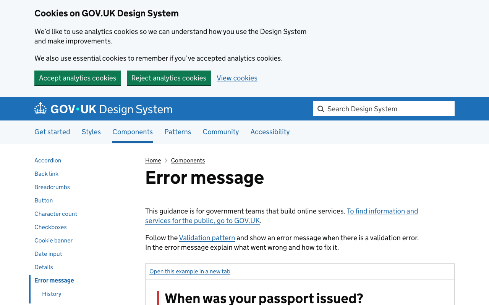
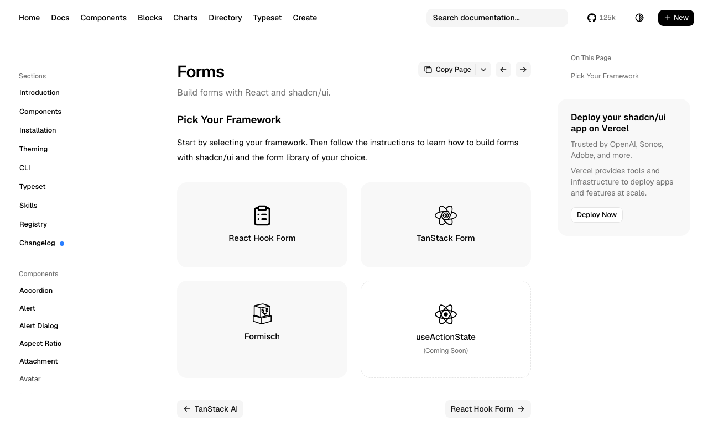
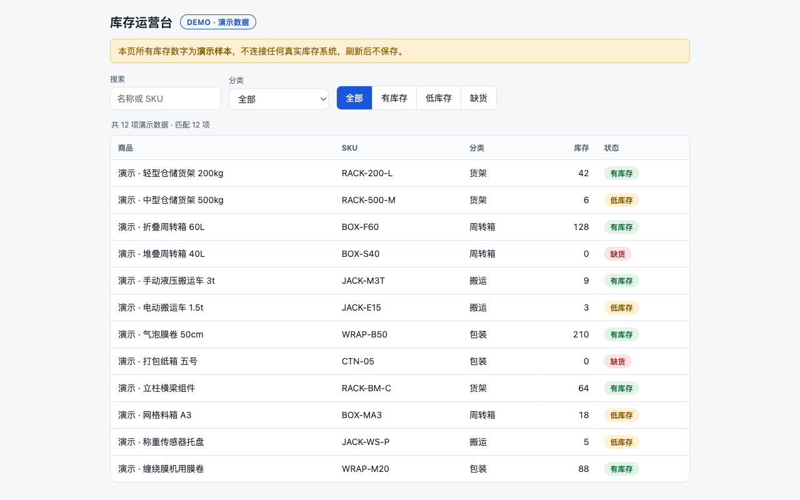

预约产品 · 无代码原型拼贴板 v1
⚡ 降级路径声明：图片生成能力不可用（尝试一次即降级，未反复重试）。本板改用真实截图蒙太奇——每图标注来源 URL 与参考状态；画廊/参考截图不作为生产素材。
🔒 停在原型门（门C）：本板为无代码原型，等你裁决。未写任何实现代码；你确认拼贴方向后，下一轮才进入实现。

参考 1 · 表单校验与错误提示模式
GOV.UK Design System（OGL-3.0，规则可直译）
design-system.service.gov.uk/components/error-message/
参考用 · 非生产素材

参考 2 · 表单组件结构与状态
shadcn/ui（MIT，源码可检）
ui.shadcn.com/docs/components/form
参考用 · 非生产素材

水位对照 · 自有交付物（运营台）
库内资产（自有，零授权问题）
evals/runs/operations-not-marketing/evidence/
自有资产 · 水位对照